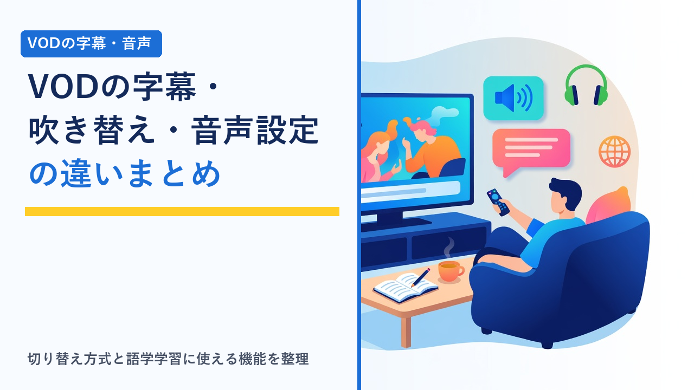

VODの字幕・吹き替え・音声設定の違いまとめ（語学学習に使える機能も）
更新日：2026-10-05

動画配信サービス（VOD）で洋画や海外ドラマ、アニメを見るとき、意外と差が出るのが字幕・吹き替え・音声まわりの仕様です。「吹き替えで見たかったのに字幕版しかなかった」「英語字幕を出したかったのに日本語字幕しか選べなかった」といった行き違いは、作品数や料金の比較だけでは気づきにくいポイントです。この記事では、字幕・吹き替えの提供方式がサービスによってどう違うか、音声や字幕に関する設定にはどんな種類があるか、そして語学学習に使いたい場合にどの機能を確認すればよいかを客観的に整理します。特定サービスの機能や配信作品を保証するものではなく、選び方の考え方を扱います。
まず押さえたい用語の整理
字幕や音声に関する表記はサービスごとに呼び方が少しずつ違います。作品ページやヘルプを読むときに迷わないよう、よく出てくる言葉を先に整理しておきます。
- 字幕版：音声は制作国の言語（原語）のまま、日本語の字幕を表示する版。
- 吹替版：音声を日本語に差し替えた版。字幕は基本的に表示されませんが、吹替音声に日本語字幕を重ねられるサービスもあります。
- 音声切り替え（多重音声）：1つの作品の再生中に、原語・日本語吹き替えなど複数の音声を切り替えられる仕組み。
- 多言語字幕：日本語以外（英語など）の字幕を選べること。原語の音声と同じ言語の字幕を出せるかどうかは、語学学習用途で重要になります。
- 日本語字幕（日本語音声の作品向け）：日本のドラマやアニメなど、日本語音声の作品にセリフを文字で表示する字幕。聴覚に障害のある人向けに、効果音や話者名まで文字にしたものは「クローズドキャプション（CC）」と呼ばれることがあります。
- 音声ガイド（音声解説）：視覚に障害のある人向けに、画面の状況をナレーションで補う音声。対応作品は限られます。
提供方式は大きく2通り：「別作品として並ぶ」か「再生中に切り替える」か
字幕と吹き替えの提供のされ方は、大きく次の2つに分かれます。どちらの方式かによって、探し方も使い勝手も変わります。
① 字幕版・吹替版が別作品として並ぶ方式
同じタイトルが「（字幕版）」「（吹替版）」のように別々に登録されている形。再生前にどちらかを選ぶ必要があり、途中で切り替えるには作品を選び直します。片方だけが見放題、もう片方はレンタルという扱いの違いが起こることもあります。
② 1つの作品の中で切り替える方式
再生画面のメニューから音声言語と字幕言語をそれぞれ選べる形。吹き替え音声＋字幕なし、原語音声＋日本語字幕、原語音声＋原語字幕など組み合わせの自由度が高く、視聴中の切り替えも簡単です。
同じサービスの中でも、作品によって①と②が混在していることは珍しくありません。字幕や音声のデータは配給元から提供される素材に左右されるため、「このサービスなら必ず吹き替えがある」とは言い切れず、最終的には作品単位での確認が必要になります。レンタル作品での字幕版・吹替版の扱いについては映画好き向けVODの選び方：新作レンタルと見放題の違いでも触れています。
字幕・音声まわりの設定項目
字幕と吹き替えの有無のほかにも、見やすさや聞きやすさに関わる設定があります。対応状況はサービスや端末によって異なるため、こだわりたい項目がある場合はチェックリストとして使ってください。
- 字幕の表示カスタマイズ：文字の大きさ、色、背景の有無や濃さを変えられる機能。テレビから離れて見る場合や、明るい場面で字幕が読みにくい場合に役立ちます。アプリ内ではなく、端末のアクセシビリティ設定に従う設計のサービスもあります。
- 音声・字幕の既定値の保存：一度選んだ音声と字幕の組み合わせを、次の話数や別の作品でも引き継ぐ機能。プロフィールごとに記憶されるサービスなら、家族で好みが違っても設定し直す手間が減ります。
- 再生速度の変更：0.5倍〜2倍程度の範囲で速度を変えられる機能。聞き取りの練習でゆっくり再生したい場合や、時間を節約したい場合に使います。テレビ向けアプリでは対応していないこともあります。
- 10秒戻し・スキップ：聞き逃したセリフをすぐ聞き直すための操作。多くのサービスにありますが、戻る秒数は固定のことが多いです。
- 音声の形式（ステレオ／サラウンド）：5.1chなどのサラウンド音声は、原語音声のみ対応で吹き替えはステレオ、という作品もあります。音響機器をつないでいる場合は確認したい項目です。
- ダウンロード時の字幕・音声：オフライン視聴用に保存するとき、音声と字幕をあらかじめ選ぶ方式と、保存後も切り替えられる方式があります。
タイプ別の比較表
| 比較項目 | グローバル総合型 | 国内総合型 | 放送局系・テレビ局系 | ジャンル特化型 |
|---|---|---|---|---|
| 字幕・吹き替えの提供方式 | 再生中に切り替える方式が中心 | 別作品として並ぶ方式と切り替え方式が混在 | 国内番組中心のため該当作品が少なめ | サービスによる |
| 吹き替えの充実度 | オリジナル作品は吹き替え付きが多い傾向 | テレビ放送・ソフト化で作られた吹き替えが多い傾向 | 作品による | ジャンルによる（アジアドラマは字幕中心など） |
| 多言語字幕（英語字幕など） | 対応作品が比較的多い | 日本語字幕のみの作品が多い傾向 | 限定的 | 限定的 |
| 日本語音声作品の日本語字幕 | 対応作品が比較的多い | 作品による | 放送時の字幕を引き継ぐ番組も | サービスによる |
| 字幕の表示カスタマイズ | 対応が多い | サービスによる | サービスによる | サービスによる |
| 再生速度の変更 | スマホ・PCで対応が多い | スマホ・PCで対応が多い | サービスによる | サービスによる |
| 向いている人 | 音声と字幕を自由に組み合わせたい | 日本語吹き替えで幅広く見たい | 国内番組を字幕付きで見たい | 特定ジャンルを字幕で見ることが中心 |
上の表は各タイプの一般的な傾向を整理したものです。字幕・吹き替え・音声の対応は作品ごと・時期ごとに異なり、同じタイプ・同じサービスの中でも差があります。契約前に各公式サイトの作品ページとヘルプページで最新の仕様をご確認ください。
語学学習に使いたい場合の確認ポイント
海外ドラマや映画を語学学習の素材として使う場合、作品数よりも「どの音声とどの字幕を組み合わせられるか」が重要になります。確認したい点を順に整理します。
原語の音声と同じ言語の字幕を出せるか
聞き取りの練習では、英語音声に英語字幕を重ねるように、音声と字幕を同じ言語にできるかが最大のポイントです。日本語字幕しか用意されていない作品では、この使い方はできません。多言語字幕は、世界各国で同じ作品を配信しているグローバル総合型のサービスで対応作品が多い傾向がありますが、すべての作品に付いているわけではないため、学習に使いたい作品の作品ページで字幕言語の一覧を確認します。
字幕がセリフとどの程度一致しているか
字幕には、セリフを要約・意訳したものと、話している言葉をほぼそのまま文字にしたものがあります。聴覚に障害のある人向けのクローズドキャプション（CC）は、セリフを忠実に文字にしていることが多く、聞き取りの答え合わせに使いやすい傾向があります。字幕言語の一覧に「英語」と「英語［CC］」のように複数並んでいる場合は、違いを見比べてみるとよいでしょう。
再生速度の変更と聞き直しのしやすさ
速度を落として再生できるか、数秒単位で簡単に戻せるかは、繰り返し聞く学習では使い勝手を大きく左右します。再生速度の変更はスマホアプリやPCのブラウザでは対応していても、テレビ向けアプリでは使えないことがあるため、学習に使う端末で対応しているかを確認します。
拡張機能など非公式ツールの扱い
PCのブラウザ向けに、2言語の字幕を同時に表示するといった機能を追加する拡張機能が存在します。ただし、これらはVOD事業者が提供する公式機能ではなく、動作の保証がないうえ、サービスの仕様変更で使えなくなることもあります。利用規約で外部ツールの利用がどう扱われているかはサービスによって異なるため、使う場合は各サービスの規約を確認したうえで自己判断となります。まずは公式機能の範囲でできることを基準に選ぶのが無難です。
学習目的に合うジャンルを選べるか
日常会話を聞きたいならホームドラマやシットコム、ニュースやドキュメンタリーなら明瞭な発音の音声というように、ジャンルによって使われる語彙や話す速度は変わります。海外ドラマのラインナップがどのタイプのサービスに集まりやすいかは海外ドラマ・韓国ドラマに強いVODはどれ？ラインナップの傾向比較で整理しています。
端末によって使える設定が違う点に注意
同じサービスでも、スマホアプリ・PCブラウザ・テレビ向けアプリでは、字幕や音声に関して使える機能が異なることがあります。
- テレビ向けアプリは機能が絞られていることがある：再生速度の変更や字幕の細かいカスタマイズがスマホ・PC限定になっている場合があります。
- 字幕の見た目は端末側の設定に従うことがある：ストリーミング端末やスマホのアクセシビリティ設定（字幕スタイル）が反映されるサービスでは、アプリ内に設定項目が見当たらなくても端末側で調整できます。
- サラウンド音声は機器の対応が前提：テレビやサウンドバーが対応していなければステレオで再生されます。
テレビで見る方法ごとの違いはテレビでVODを見る方法まとめ、ダウンロード機能の対応状況はVODサービスの画質・ダウンロード機能を比較をご覧ください。
契約前に確認する手順
- 見たい作品を3本ほど書き出す：吹き替えで見たい作品、字幕で見たい作品、学習に使いたい作品というように、目的別に挙げておくと確認がしやすくなります。
- 作品ページの「音声」「字幕」の表記を確認する：公式サイトの作品検索はログインなしで使えることが多く、作品ページに対応する音声言語と字幕言語が書かれています。字幕版と吹替版が別々に登録されていないかも同時に見ます。
- 見放題かレンタルかを版ごとに確認する：字幕版と吹替版で扱いが違うことがあるため、見たい版が見放題の対象かを確かめます。
- ヘルプページで設定機能を調べる：「字幕」「音声」「再生速度」などの語でヘルプを検索し、使いたい端末で対応しているかを確認します。
- 無料体験があれば実際に操作して確かめる：再生中の切り替えのしやすさや字幕の読みやすさは、触ってみるのが最も確実です。各社の体験条件は動画配信サービスの無料体験まとめ比較に、体験のみで終える場合の注意点はVODサービスの解約忘れを防ぐコツと注意点まとめにまとめています。
選び方のポイント
- 「サービス単位」ではなく「作品単位」で確認する：字幕・吹き替えの有無は配給元の素材に左右されるため、見たい作品の作品ページを見るのが確実です。
- 吹き替え重視なら、吹替版が見放題の対象かまで見る：吹替版だけがレンタル扱いになっていないかを確認します。
- 語学学習なら、原語字幕と再生速度の2点を優先する：音声と同じ言語の字幕が出せること、学習に使う端末で速度変更ができることが基準になります。
- 字幕の読みやすさは端末込みで考える：テレビで見るなら、アプリ側か端末側のどちらかで字幕の大きさや背景を調整できるかを確かめます。
- 家族で好みが分かれるならプロフィールごとの設定保存を確認する：字幕派と吹き替え派が同じアカウントを使う場合、設定がプロフィール単位で記憶されると切り替えの手間が減ります。プロフィール数や同時視聴の条件は家族アカウント・同時視聴ルールまとめをご覧ください。
よくある質問
字幕版と吹替版は、再生中に切り替えられますか？
サービスと作品によります。1つの作品の中に複数の音声と字幕が入っている方式なら、再生画面のメニューからいつでも切り替えられます。一方、字幕版と吹替版が別々の作品として登録されている方式では、途中で切り替えるには作品を選び直す必要があります。同じサービスの中でも両方の方式が混在していることがあるため、作品ページの音声・字幕の表記で確認するのが確実です。
英語音声に英語字幕を付けて見ることはできますか？
英語字幕が用意されている作品であれば可能です。多言語字幕は世界各国で同じ作品を配信しているグローバル総合型のサービスで対応作品が多い傾向がありますが、すべての作品に付いているわけではありません。国内向けのサービスでは日本語字幕のみの作品が多い傾向があるため、語学学習に使いたい場合は、契約前に目的の作品の字幕言語を作品ページで確認してください。
日本のドラマやアニメにも字幕を表示できますか？
日本語音声の作品に日本語字幕を表示できるかどうかは、サービスと作品によって異なります。対応している作品では、音を出しにくい場所での視聴や、セリフを聞き取りにくいときの補助として使えます。テレビ放送時に字幕が付いていた番組でも、配信では字幕が付かない場合があるため、作品ページの字幕欄に「日本語」の表記があるかを確認します。